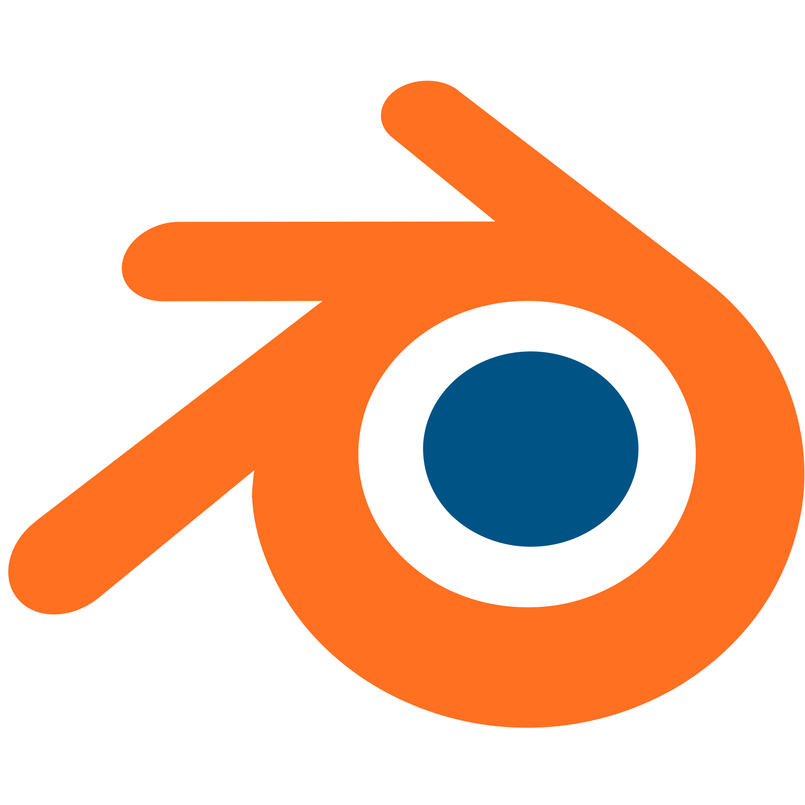
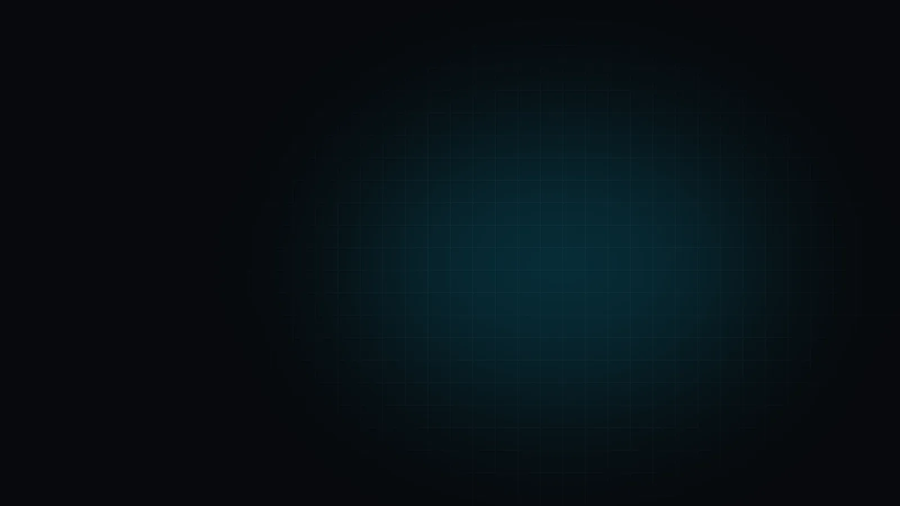
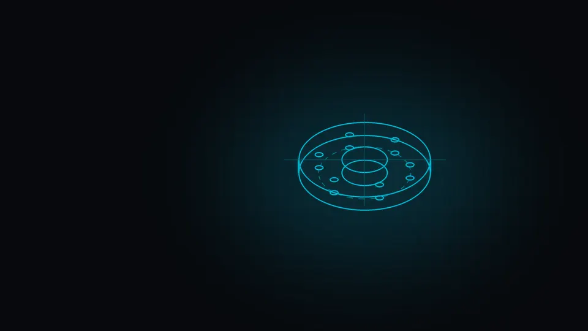
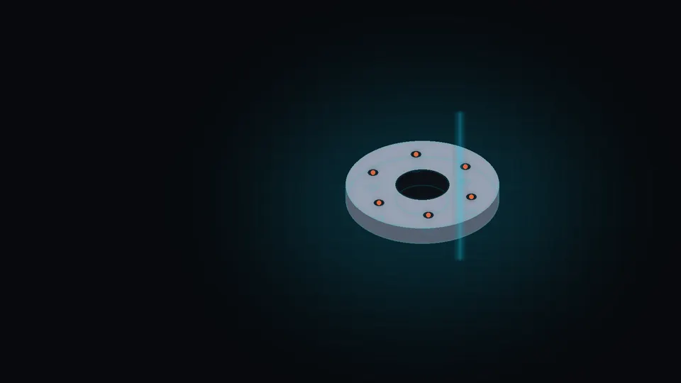
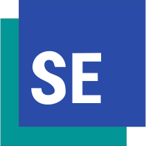

Ücretsiz
$0/ay
Denemek ve küçük işler için
- Günde 30 kredi
- Web Studio ve parametrik kaydırıcılar
- STEP / STL / GLB indirme
- 1 bağlı eklenti
Parçanı doğal dille anlat; AICADBridge parametrik 3B modelini kursun, doğrulasın ve CAD programına göndersin.
Kart gerekmez · günde 30 ücretsiz kredi
AICADBridge, Google ile giriş yapmanı sağlar; yalnızca adını, e-postanı ve profil fotoğrafını hesabını oluşturmak için kullanır. Gizlilik politikası
Ø100 mm, 10 mm kalın, 6 cıvata delikli flanş
Üret
Fusion, SolidWorks, Blender ve 13 program dahaBir cümleden ölçülü, gerçek CAD modeline: kısa tanıtım videosu.


Parçayı ölçüleriyle yaz: Ø100 mm flanş, 6 × M6 delik, merkezde Ø35.

Her model B-rep olarak kurulur; STEP dosyası ölçüsünü korur.

Hacim, et kalınlığı ve delik konumları kontrol edilir; sorun varsa model kendini düzeltir.

Fusion, SolidWorks, Blender ve diğerlerinde yeni parça olarak açılır.
Temsilî görüntü
Model parametrik kurulur; çapı, kalınlığı, delik sayısını kaydırıcıyla değiştir, yeniden üretmeden.
Çıktı B-rep katı: STEP ölçüsünü korur, GLB ve STL de hazır.
Hacim, et kalınlığı ve delik konumları kontrol edilir; sorun varsa model kendini düzeltir.
Flanş hazır: Ø100 × 10 mm, 6 × Ø6,6 delik, hacim 66,9 cm³. Doğrulama geçti.
Fusion, SolidWorks, Blender ve diğerlerinde yeni parça olarak açılır.
Eklenti hesabına cihaz koduyla bağlanır ve yalnızca dışarı doğru HTTPS kullanır; bilgisayarında port açılmaz.
Ve daha fazlası yakında: tüm entegrasyonlar
Ürün adları ve logolar sahiplerinin ticari markalarıdır; yalnızca uyumluluğu belirtmek için kullanılır, ortaklık veya onay anlamına gelmez.
| Program | Bağlantı |
|---|---|
| Hazır3 Kurulum programı eklentiyi kurar; model programında yeni parça olarak açılır. | |
| Eklenti | |
| SolidWorks | Eklenti |
| Blender | Eklenti |
| Beta6 Kurulum programının eklentisiyle (Onshape: bulut bağlantısıyla) çalışır; test aşamasında, geri bildirimini bekliyoruz. | |
| Eklenti | |
 Solid Edge | Eklenti |
| Eklenti | |
| Eklenti | |
| Eklenti | |
| Onshape | Bulut bağlantısı |
| STEP klasörü7 Model STEP olarak bir klasöre kaydedilir; programında İçe aktar ile açarsın. | |
| Siemens NX | STEP klasörü |
| PTC Creo | STEP klasörü |
| Ansys | STEP klasörü |
| Abaqus | STEP klasörü |
| COMSOL | STEP klasörü |
| STAR-CCM+ | STEP klasörü |
| HyperMesh | STEP klasörü |
Claude, Cursor veya VS Code'dan MCP ile model kurdur. Asistan ölçüleri doğrular ve bağlı programına gönderir.
claude mcp add --transport http aicadbridge https://api.aicadbridge/mcp --header "Authorization: Bearer aicad_sk_..."Görevlerin, modellerin ve dosyaların hesabında saklanır; her cihazdan erişirsin.
"Yeni görev" kutusuna parçayı ve ölçüleri yaz. Kaydırıcılarla düzenle, STEP olarak indir.
Kurulum programı programlarını bulur ve eklentiyi kurar; "Bağla"ya basınca açılan sayfada onayla. Windows uyarı verirse aşağıdaki nota bak.
Kurulum programı henüz dijital imzalı değil; bu yüzden yeni bir dosya olarak görünür ve uyarı çıkabilir. Windows: "Windows bilgisayarınızı korudu" → Daha fazla bilgi → Yine de çalıştır. Chrome/Edge: indirmeler listesinde dosyanın yanındaki Sakla. Doğrulamak için SHA-256 sağlama toplamı ile karşılaştır.
Model programında yeni parça olarak açılır. Değişiklik için aynı görevde devam et; yalnızca o ölçü değişir.
$0/ay
Denemek ve küçük işler için
$20/ay
Düzenli tasarım yapan mühendisler için
$40/kişi/ay
Ortak projelerde çalışan ekipler için
1 kredi = 1 model üretimi ya da düzeltme turu. Kaydırıcıyla yeniden kurma ücretsizdir. Fiyatlara KDV dahil değildir.
Başka sorun varsa GitHub'da yaz.
Evet, aynı görevde devam ettiğin sürece. Model son planı temel alır ve yalnızca istediğin değişikliği yapar; eski sürüm kaybolmaz.
Evet. Web Studio tek başına çalışır: modeli tarayıcıda görür, kaydırıcılarla düzenler ve STEP, STL, 3MF ya da GLB olarak indirirsin.
Hesabına bir kodla eşleşir, gönderdiğin modelleri HTTPS ile alır ve programda yeni parça olarak açar. Port açmaz; bağlantıyı Entegrasyonlar sayfasından istediğin an koparabilirsin.
Her model üretimi ya da otomatik düzeltme turu 1 kredidir. Kaydırıcıyla yeniden kurma, indirme ve programa gönderme ücretsizdir; kendi API anahtarınla kredi düşmez.
Evet, MCP ile. Entegrasyonlar sayfasından kişisel bir anahtar oluştur ve yapılandırmayı asistanına ekle. Harcanan kredi senin hesabından düşer; anahtarı istediğin an iptal edebilirsin.
Hesap bilgilerin (ad, e-posta, profil fotoğrafı), görevlerin ve model dosyaların AICADBridge sunucusunda, yalnızca senin hesabına bağlı olarak saklanır. Görevi sildiğinde modelleri ve mesajları da silinir.
Dosya henüz dijital imzalı değil; yeni ve az indirilen imzasız dosyalar için Windows SmartScreen ve Chrome/Edge uyarı gösterir. Windows'ta Daha fazla bilgi → Yine de çalıştır, Chrome'da Sakla seç. Kod herkese açık (GitHub); dosyanın aynı olduğunu SHA-256 sağlama toplamı ile doğrulayabilirsin. Kurulum yönetici izni istemez.